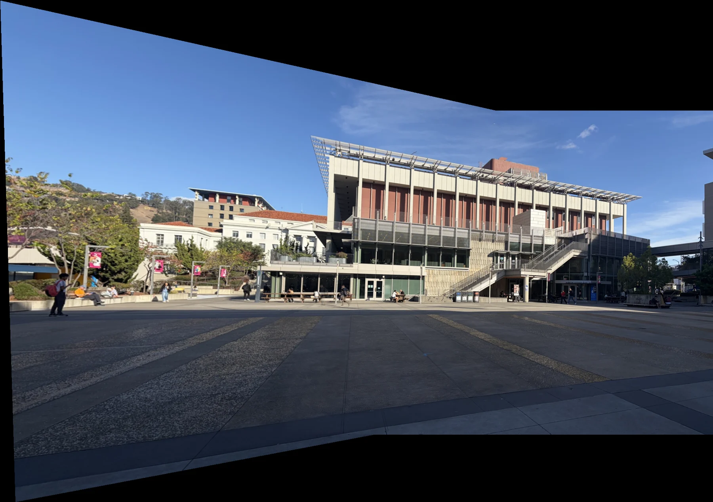
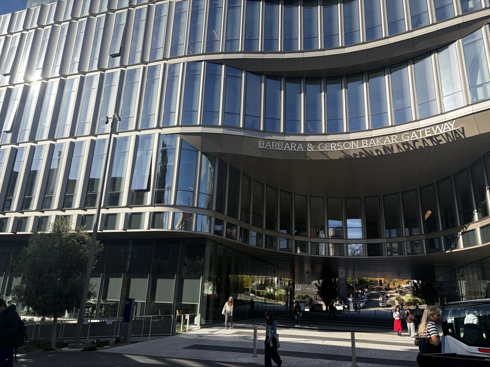
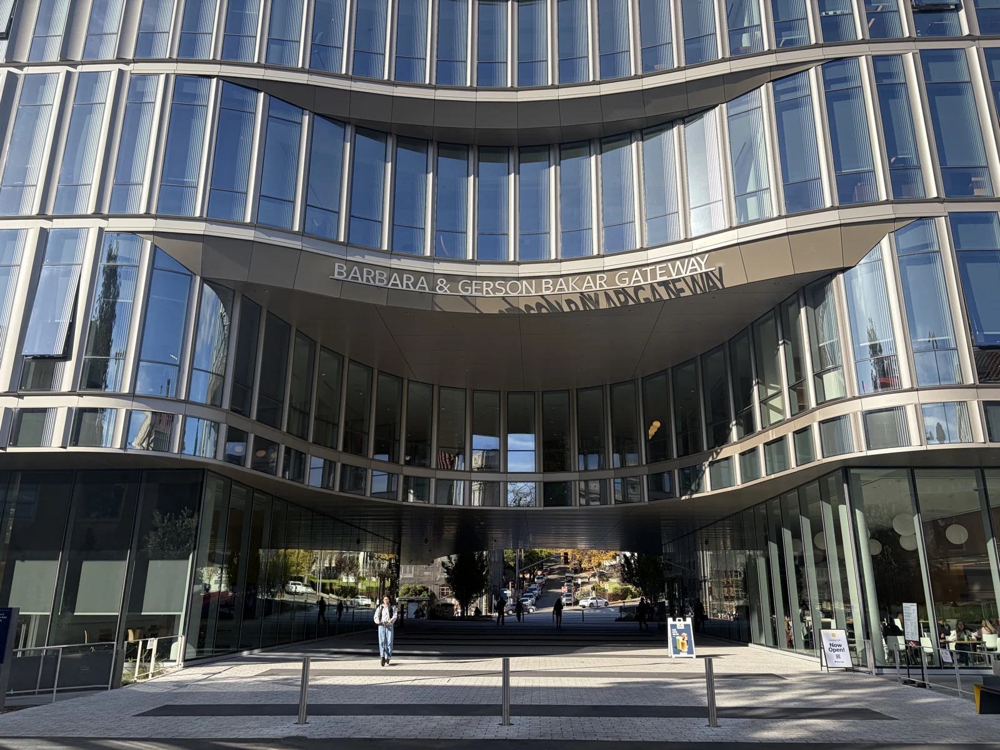
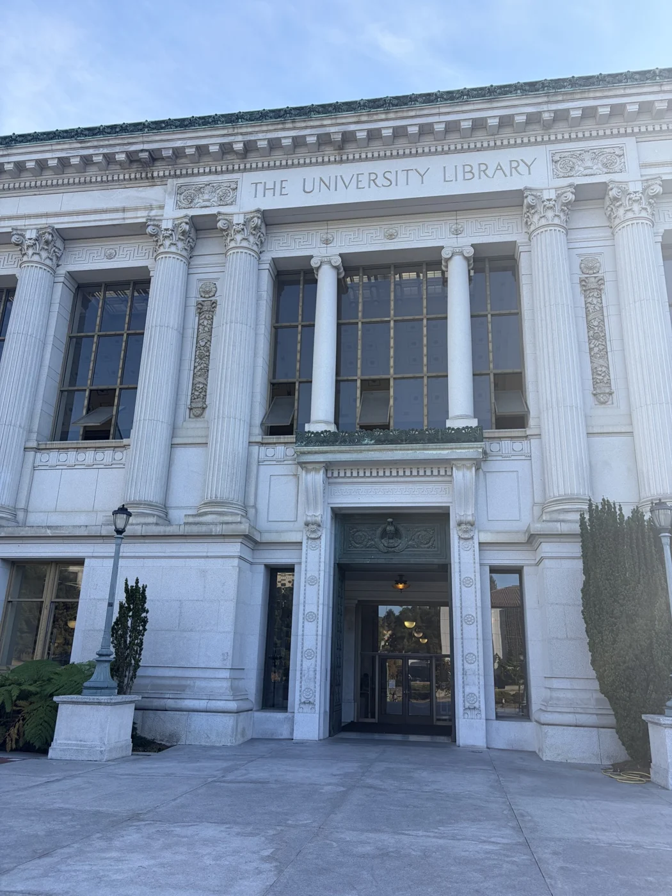
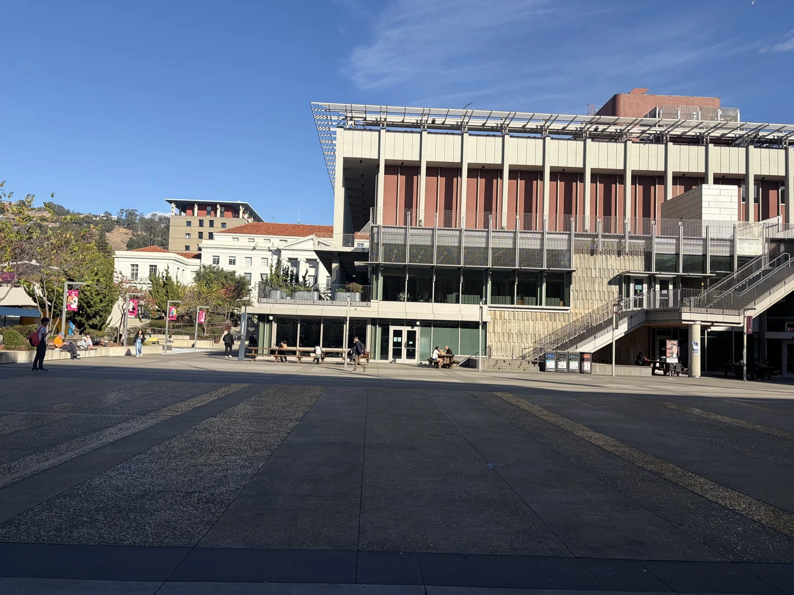
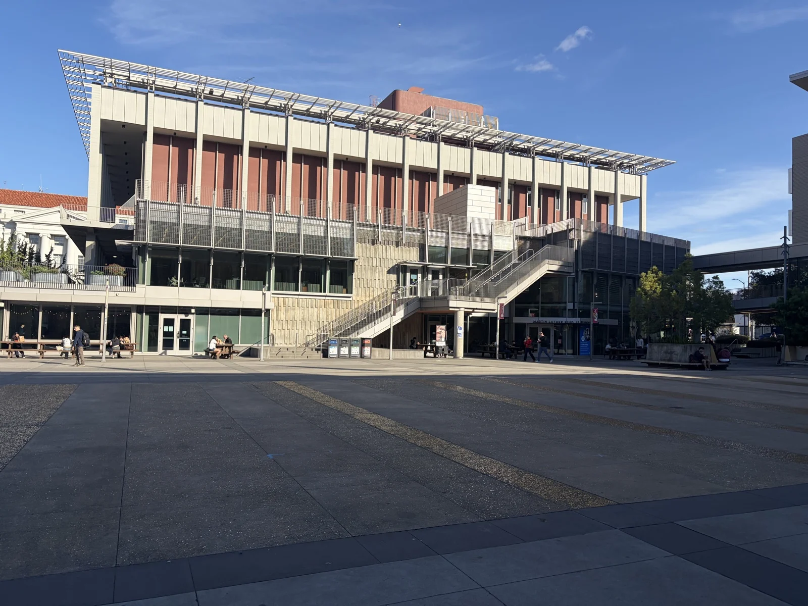
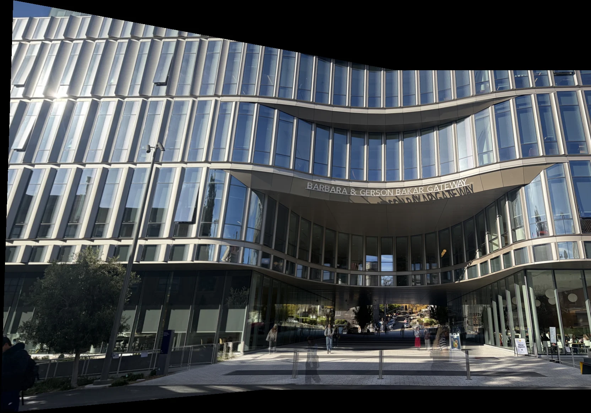
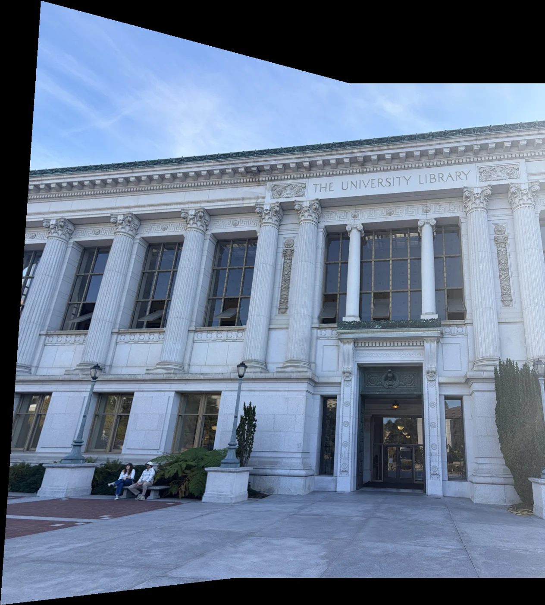

The Gateway
H = [ 1.4908180 -0.0457156 -427.1008497
0.2269261 1.3043738 -197.9305051
0.0003892 0.0000118 1.0000000 ]CS 180 · Project 4A
Recovering perspective, rectifying planar surfaces, and stitching overlapping photographs into a shared view.

01 / Shoot the pictures
The source photographs show The Gateway, Doe Library, and Lower Sproul.





02 / Recover homographies
A homography maps a point in one view to its corresponding point in another. The 3 × 3 matrix has eight free parameters after fixing its last entry to 1. At least four point pairs in a non-degenerate configuration are needed; additional pairs form an overdetermined system.
For each correspondence, computeH adds two equations to A h = b and solves with numpy.linalg.lstsq. This minimizes the algebraic residual across the input point pairs.
The warp first transforms the image corners to determine the output bounds. It then visits every destination pixel, adds the canvas origin offset, and applies H⁻¹ to find its source coordinate. Sampling the source this way avoids the holes that forward pixel mapping can leave behind.
Matching colors and numbers show corresponding locations in the two images. Each matrix maps the left image into the right image’s coordinates at the 1200-pixel working scale, with h₃₃ = 1.
H = [ 1.4908180 -0.0457156 -427.1008497
0.2269261 1.3043738 -197.9305051
0.0003892 0.0000118 1.0000000 ]H = [ 1.3557294 -0.0841337 -325.8783507
0.3184536 1.2274743 -201.2253600
0.0003903 0.0000041 1.0000000 ]H = [ 1.8914893 0.0105413 -776.7401629
0.3248311 1.6014434 -306.1325664
0.0007179 0.0000496 1.0000000 ]03 / Warp the images
Both implementations use inverse warping. Nearest-neighbor rounds to the closest source pixel, requiring one sample per destination pixel. Bilinear interpolation computes a weighted average of four neighboring samples. Nearest-neighbor has less sampling work and can show jagged edges or pixel blocks; bilinear requires more arithmetic but produces smoother results, sometimes softening fine detail.
The warp expands the oblique painting into a frontal rectangle. Bilinear interpolation smooths the enlarged face and background, while neither method can recover detail absent from the original.
Rectifying the sign straightens the panel and makes the text columns easier to compare. Bilinear interpolation makes the text look much clearer by smoothing transitions along the letter edges. Nearest-neighbor produces abrupt changes in color between adjacent pixels, creating jagged, blocky artifacts around the lettering.
04 / Blend images into a mosaic
I use corresponding points in the two photographs to estimate a homography that aligns the left image with the right image. I then inverse-warp the left image using bilinear interpolation, keeping the right image as the reference. Both images are placed on a shared canvas large enough to contain their combined views.
To join them smoothly, I use feather blending: pixels near the center of each source image receive more weight than those near its edges. In overlapping regions, I combine the aligned colors using a weighted average; elsewhere, I keep the color from the image that covers that location. This produces a single mosaic with a gradual transition between the two photographs.
The repeating vertical fins and curved façade make alignment easy to inspect. The broad building outline is continuous, while moving street objects and differences in viewpoint can leave local inconsistencies.

The columns, windows, and roofline provide strong shared structure.

The stitched view extends across the plaza and the surrounding buildings.
05 / Reflection
Rectification shows how a projective transform can turn a tilted planar region into a frontal view. The mosaic results extend that same idea to overlapping photographs, using a shared coordinate system and a weighted blend.
A smooth blend depends on geometric alignment: feathering can soften a seam, but it cannot correct parallax, moving objects, or a mismatched correspondence. Likewise, interpolation changes how a warp samples existing detail; it cannot recover detail missing from the source photograph.